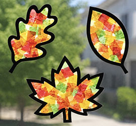

Crafts

Fall Leaf Suncatchers
Turn colorful tissue paper into a beautiful suncatcher that makes any sunny window feel extra cozy!
Here are some materials you will need:
- clear contact paper
- variety of tissue paper (fall leaf colors)
- white cardstock
- black cardstock (or construction paper)
- scissors
- Printable Leaf Template (optional)